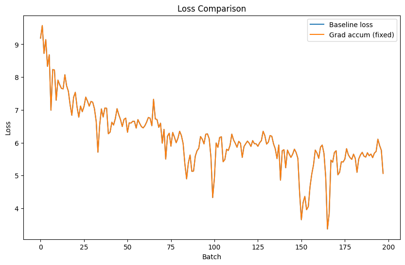
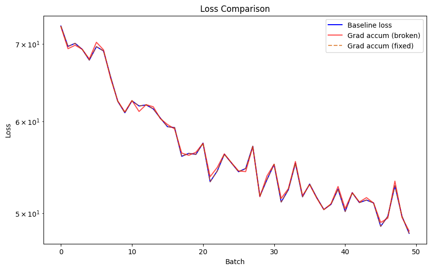

PyTorch, Gradient Accumulation, and the dreaded lack of reproducability
pytorch
Published
October 29, 2024
Introduction
A few weeks ago the Unsloth team put out a pretty damning report showing that most training frameworks have critical issues when it comes to applying gradient accumulation and training language models (specifically in the use-case of generation).
When performing gradient accumulation, the underlying assumption is that training with a batch size of 8 and 4 gradient accumulation steps should be exactly equivalent to training with a batch size of 32 and no accumulation. However, what has been discovered is that when training language models for generation the resulting outputs are not all uniform (the same size), which makes a drastic difference in calculating the loss.
In this blog, I’ll be walking you through what myself and the rest of the transformers team (Marc Sun, Yoach Lacombe, myself, and many others) worked through to investigate this issue and break it down to its core parts in a reproducible case. I’ll also discuss how this fix is also needed for distributed training , something the Unsloth team didn’t talk about in their report.
If you notice, we explicitly define the reduction as "mean" (the default).
What this means, is that we are assuming that across all steps of gradient accumulation, the number of labels seen total are the exact same. In a generation problem though this is not the case when we start messing with the batch sizes. For a quick dumb TL;DR:
Say the batch is:
[[0],[0,1],[0,1,2], [0,1,2,3]]
The average length of the first two items is .75, while the second is 3.5.
This tiny numerical difference means the world when it comes to calculating our loss here, as that "mean" isn’t taking into account the rest of the items our gradient accumulation step is seeing!
So what’s the fix?
The Fix: Loss
The first fix is to rewrite our loss function to take into account the total number of items seen across all gradient accumulation steps. The Unsloth crew go into more detail on why that matters, below I’ve defined a new loss function which reflects this:
Essentially if we pass in a num_items_in_batch, we use the "sum" of everything then divide by the total later, rather than letting PyTorch do it themselves.
But, that’s not the only fix we need to do. How do we get num_items_in_batch?
The Fix: Prefetching
The second fix is figuring out num_items_in_batch. We need to be careful about:
Making sure we prefetch gradient_accumulation_steps batches of data at a time
Calculating the total non pad tokens across all labels.
Let’s rewrite our training loop to do just that:
num_update_steps_per_epoch = math.ceil(len(train_dl) / gradient_accumulation_steps)remainder =len(train_dl) % gradient_accumulation_stepsif remainder ==0: remainder = gradient_accumulation_stepslosses_fixed_ga = []actual_loss =0for epoch inrange(3): ... iterator =iter(train_dl)for update_step inrange(num_update_steps_per_epoch): batch_samples = [] num_batches = gradient_accumulation_steps if update_step != (num_update_steps_per_epoch -1) else remainder# Prefetch and calculate the number of non-padded items seen across one gradient accumulation "step"for _ inrange(num_batches): batch_samples += [next(iterator)] num_items_in_batch =sum([(batch["labels"].ne(-100)).sum() for batch in batch_samples])for batch in batch_samples: ... loss = loss_fn( out["logits"], batch["labels"], vocab_size=model.vocab_size, num_items_in_batch=num_items_in_batch ) loss.backward() optimizer.step() scheduler.step() optimizer.zero_grad()
Show the full code
import mathset_seed()gradient_accumulation_steps =2batch_size =4model, optimizer, scheduler = get_items(model_name)train_dl, eval_dl = get_dataloaders(train_batch_size=batch_size)model.to("cuda")num_update_steps_per_epoch = math.ceil(len(train_dl) / gradient_accumulation_steps)remainder =len(train_dl) % gradient_accumulation_stepsif remainder ==0: remainder = gradient_accumulation_stepslosses_fixed_ga = []actual_loss =0total_batched_samples =0for epoch inrange(3): model.train() iterator =iter(train_dl)for update_step inrange(num_update_steps_per_epoch): batch_samples = [] num_batches = gradient_accumulation_steps if update_step != (num_update_steps_per_epoch -1) else remainder# Prefetch and calculate the number of non-padded items seen across one gradient accumulation "step"for _ inrange(num_batches): batch_samples += [next(iterator)] num_items_in_batch =sum([(batch["labels"].ne(-100)).sum() for batch in batch_samples])for batch in batch_samples: total_batched_samples +=1 batch = {k:v.to("cuda") for k,v in batch.items()} out = model(**batch) loss = loss_fn( out["logits"], batch["labels"], vocab_size=model.vocab_size, num_items_in_batch=num_items_in_batch ) loss.backward() actual_loss += loss.detach().cpu().item() optimizer.step() scheduler.step() optimizer.zero_grad() losses_fixed_ga.append(actual_loss) actual_loss =0
And also rerun our baseline:
Show the code
set_seed()gradient_accumulation_steps =1batch_size =8model, optimizer, scheduler = get_items(model_name)train_dl, eval_dl = get_dataloaders(train_batch_size=batch_size)model.to("cuda")num_update_steps_per_epoch = math.ceil(len(train_dl) / gradient_accumulation_steps)remainder =len(train_dl) % gradient_accumulation_stepsif remainder ==0: remainder = gradient_accumulation_stepslosses_baseline = []actual_loss =0total_batched_samples =0for epoch inrange(3): model.train() iterator =iter(train_dl)for update_step inrange(num_update_steps_per_epoch): batch_samples = [] num_batches = gradient_accumulation_steps if update_step != (num_update_steps_per_epoch -1) else remainder# Prefetch and calculate the number of non-padded items seen across one gradient accumulation "step"for _ inrange(num_batches): batch_samples += [next(iterator)] num_items_in_batch =sum([(batch["labels"].ne(-100)).sum() for batch in batch_samples])for batch in batch_samples: total_batched_samples +=1 batch = {k:v.to("cuda") for k,v in batch.items()} out = model(**batch) loss = loss_fn( out["logits"], batch["labels"], vocab_size=model.vocab_size, num_items_in_batch=num_items_in_batch ) loss.backward() actual_loss += loss.detach().cpu().item() optimizer.step() scheduler.step() optimizer.zero_grad() losses_baseline.append(actual_loss) actual_loss =0

And now we find they are near exactly the same! (I found I could get within ~5 decimal places, not bad at all).
That’s it, we’re done right?
Wrong
Problem: Distributed Training
That’s great, but what about during distributed training?
Since the data is split across n GPUs, each other GPU has no idea how many total items are seen across a step, leading to the same issue.
The solution is to call a gather() across the inputs and use them to help calculate the loss. The problem here, is this involves a communication step between all of the GPUs, which can get costly if we’re doing so every gradient accumulation step (as rather than a single communication when we do backward(), we’re now doubling it to two).
Below is an experiment I ran across 8 GPUs (with a much larger batch size) showcasing how these results change based on if we do gather() or not.

The full solution is below, utilizing accelerate solely to handle DDP and splitting the data between each GPU, just make sure to run this via torchrun or accelerate launch.
If you want to be 100% exact, I recommend you do this. However, without it we’re extremely close (much closer than before), so it’s up to you, your compute budget, and if you find the extra .gather() adds too much time.
As we continue to see, gradient accumulation seems simple on the surface but hard to get right! Hopefully this article helps teach you how to stay reproducible as you scale training with gradient accumulation.
I’d like to thank the Unsloth team who helped us figure out how to change the code in the Trainer, and Yoach and Marc for getting down in the weeds with me as we worked towards coming up with minimal reproducible examples to help educate all of us.